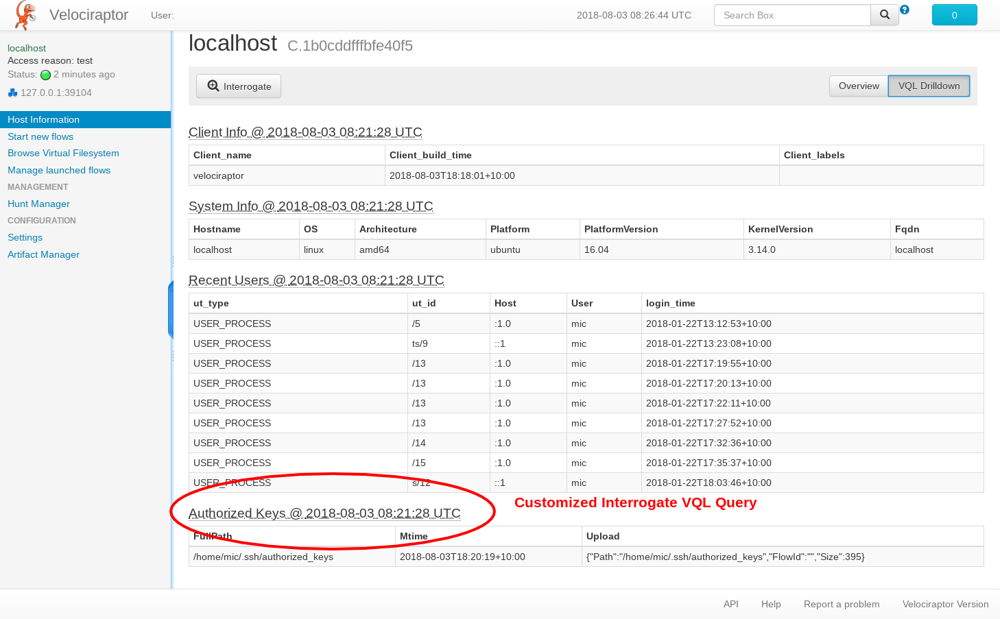

When writing Velociraptor we decided to keep things very simple - we did away with a lot of the information gathered during interrogate in favor of a much simpler data model.
GRR maintains an elaborate model of client data. For example, GRR collects and maintains a list of clients\’ network interfaces, users, user\’s home directory etc. This information is maintained in elaborate protobufs and stored in the database in many rows.
While some of this information is needed for client searching, GRR maintains vastly more information than necessary in this data model. The client data model is built during the interrogate phase (A periodic flow run on the clients to refresh server side data).
Maintaining such a complex data model results in a very rigid design. For example, if a user wanted to collect more information from clients they would need to modify protobufs, update the interrogate flow, recompile the code and redeploy. These modifications are also very invasive as once code has been heavily modified, there is an overhead of keeping these modifications in sync with newer upstream versions.
Velociraptor also maintains client information via its Interrogate flow. However, Velociraptor\’s interrogate flow simply issues a series of VQL queries, and these responses are stored directly in the database with minimal interpretation. Indexes are maintained for some information which users should be able to search on, but there is no attempt to build or maintain a client data model at all (You can see details of the model described below in the FileBaseDataStore post).
The advantage of this approach is that users can simply add extra VQL queries to the interrogate phase to collect more tailored site specific information. This does not require compiling of any code or redeploying the server. The following example illustrates the power of this technique.
Normally Velociraptor collects minimal information from the client upon interrogation (i.e. when the client first enrols or when interrogated periodically). However it is very easy to customize this collection depending on local site requirements. In this section we work through a step by step example of extending the Velociraptor interrogate flow.
Suppose that in our deployment we wanted to check if a machine is able to be logged into remotely. For a Linux machine we want to see all authorized_keys files on every machine that enrolls. Collecting this information allows us to quickly see which machines a compromised user account could spread to.
We know we need to issue a VQL query but we are not 100% sure which one. Luckily we can use Velociraptor itself to run the query locally using the syntax \“velociraptor query <query>\“.
Start with a simple glob query to find all authorized_keys files:
SELECT FullPath from glob(globs="/home/*/.ssh/authorized_keys")
Suppose we now want to actually grab a copy of all files so we can archive them on the server This will keep a record of the authorized keys on the server for each Interrogate flow. If we run the flow periodically we will end up with a time based evolution of the authorized keys files on each host. Pretty handy!
SELECT FullPath,
timestamp(epoch=Sys.Mtim.Sec) as Mtime,
upload(file=FullPath) as Upload
FROM glob(globs="/home/*/.ssh/authorized_keys")
We can run the query locally using the Velociraptor tool:
mic@localhost:/tmp> velociraptor query "select FullPath, \
timestamp(epoch=Sys.Mtim.Sec) as Mtime, \
upload(file=FullPath) as Upload \
FROM glob(globs=['/home/*/.ssh/authorized_keys'])"
velociraptor: Uploaded home/mic/.ssh/authorized_keys (395 bytes)
[
{
"FullPath": "/home/mic/.ssh/authorized_keys",
"Mtime": "2018-08-03T18:20:19+10:00",
"Upload": {
"Path": "home/mic/.ssh/authorized_keys",
"Size": 395
}
}
]
Velociraptor\’s query command enables us to run the query directly on the local host and observe the results. When the same query is issued to the Velociraptor client, the same result will be generated and sent to the server. This enables us to interactively develop and test our queries without needing to run a full client/server.
Note the upload() VQL function which causes the file to be uploaded to the server. (When run locally the file will be copied to the upload directory as can be seen by the upload confirmation message), but when run within the Velociraptor client, the file will be uploaded to the server and stored within the flow.
We can now add the query to all Interrogate flows that will be run from now on. We simply add it to the configuration file under the Interrogate.additional_queries key:
Interrogate.additional_queries:
Query:
- Name: Authorized Keys
VQL: >
select FullPath, timestamp(epoch=Mtime.Sec) as Mtime,
upload(file=FullPath) as Upload
from glob(globs='/home/*/.ssh/authorized_keys')
From now on the additional query will be recorded for all clients. The GUI shows it in the client information page:
